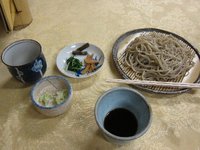
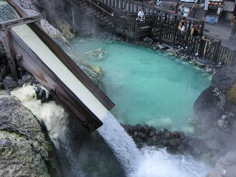
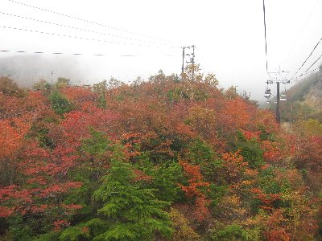
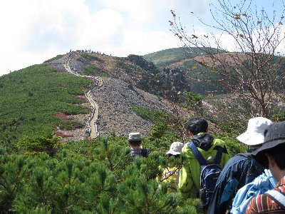
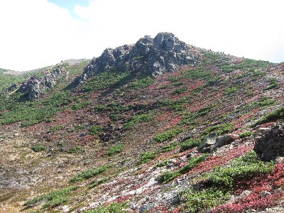

紅葉ハイキングin草津 | 2011年10月 幹事：アル兄 |
|---|---|
| ハイキングしながら紅葉見に行こう企画の時期がやってきました。 今年は、ちょっと遠出して草津の本白根山に行ってきました。 6人が2台の車に分乗し、中央道—長野自動車道—上信越自動車道 信州中野ICを降りて志賀高原・横手山を通り過ぎ、山田峠を越えての進撃です。 この峠は、いつぞや冬にスキーで志賀高原→万座温泉ツアーで通った場所です。そうか、雪が無い時はこんな具合か。そして群馬県の草津温泉へ。早朝出発したけど、やはり時間がかかり午後2時頃、本日の宿、おんせん旅館「菊水荘」に到着です。 この日は、草津温泉街を巡り、お土産屋をひやかし、試食の饅頭や漬物を食べ、西の河原露天風呂（巨大露天風呂）にはいり、宿で美味しい料理を食べ、外湯に突撃し、部屋で酒びたり、極楽気分で寝ました。 | |
|  志賀高原手前でお昼。蕎麦美味し！ |  草津温泉街で |
| 二日目 今日が本番です。朝食後直ぐ出発。 本白根山は、白根山（駐車場・レストハウスあり）からアクセス出来るのですが、紅葉シーズン（しかも3連休ド真ん中）では、道路が混むことが予想されるため、下からゴンドラ（現地ではロープウェイと呼んでいた）で、本白根山付近に行った方が良いだろうと言うことで、ロープウェイにて本白根山へ。 ロープウェイから眺めると紅葉真っ盛りです。しかし山頂付近は雲に隠れてますな〜 山頂からは本白根コースを時計回りに歩くことにしました。やはり曇っています。 | |
 夕食。しゃぶしゃぶです♪ |  ロープウェイからは綺麗な紅葉が |
| 細い道を歩いて行くと、すれ違う人達がいます。それなりに人気が有るんですね。道は険しくもなく程よい散歩コースと言う感じで進んでいましたが、富貴原の池分岐の所から登り階段の嵐。う〜ん、標高差ここで稼いでいるな。 すでに紅葉は過ぎ去っているようで、廻りは枯れ木か針葉樹ばかり。天候も曇りでぱっとしません。 階段を登りきると、見どころの一つとなっている鏡池に到着します。文字通り湖面が鏡のように対岸の景色を映しこむ、と言うことで、紅葉していればさぞかし綺麗だろうと思われますが、すでに枯葉状態で枝には何も付いてなく、針葉樹が写るだけです。イマイチ美しくないな。新緑や紅葉真っ最中、雪景色の時に来たら綺麗でしょうね。この鏡池で標高2059mです。結構高いよね。 | |
 結構綺麗でしょう、紅葉 |  鏡池で。しまった、これ以上近くで撮ってない。 |
| 狭い道を、対向者に気を使いながらさらに進んでいくと、高木がなくなり開けた場所に出ます。右が大きな火口です。ここが中央火口と呼ばれるところですね。しばらく行くと本白根山展望所に到着です。 あれ、本白根山頂かと思ったら本白根展望所って書いてありますよ！山頂どこよ！ 展望所って書いてありますが、ここが山頂のようです。やれやれ。火口の縁なのね。標高2171m。 北側に大きな中央火口。南西の山の向こうは万座です。 | |
|  もうすぐ本白根山頂だ |  ほら、下に展望所って書いてあるでしょう |
| ここまできたら、白根山にも行って湯釜を見たいよね。って事で、そのままドンドコ下り、白根レストハウスで軽く昼食をとり、お散歩コースの白根山・湯釜見学コースへ。 白根山レストハウスは国道292号に面しているので、車で来ることが出来ます。昨日通りましね。昨日も渋滞してたけど、今日は半端ない渋滞で、上り下りそれぞれ、何処まで続いているのか分からない状態です。ロープウェイで来てよかったね。 レストハウスも混雑していたので、外で売っていた、おにぎりやパン・リンゴを食べて、すぐさま出発。 湯釜は硫化水素が噴出し危険な状態なので近づけません。白根山・湯釜見学コースは、湯釜が見える展望台までのコースなのです。お散歩コースかと思いきや結構な坂です。本白根山を歩いてきた我々には結構きついかも。 息を切らしんがら展望所に到着。おおー、湯釜ってエメラルドグリーンの池だ！湯釜って火口湖なんだね。塩化水素や二酸化硫黄が溶け込んでいて強い酸性（PH1)になっているらしい。以前は近くまで行けたんだって。 しかし、今ではこの展望台まで硫黄の臭いがする。これ近づけって言われてもきついな〜。まわりには草木生えてないし。 | |
|  本白根山（火口側から） |  湯釜。なんか地獄絵図って感じ |
| 湯釜を見学後は早々に退散し、またロープウェイで帰りました。 いや〜、お散歩ハイキングかと舐めていたら結構大変でした。私なんか、1時間位歩いて終了かと思っていたからね。でも、良い運動になりました。紅葉は少し残念だったけど、火口綺麗だったし楽しいコースでした。 | |
| 写真＆コメント ｂｙ べっしー | |